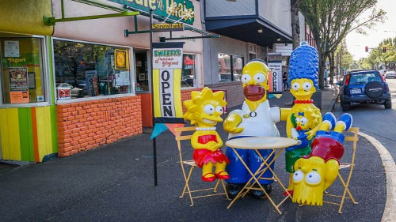

Springfield: Home of "The Simpsons"
SPRINGFIELD -- Springfield, Oregon is believed to be the famous "typical American town" behind the acclaimed Twentieth Century Fox Film Corporations' "The Simpsons." Take a self-guided and unofficial Simpsons tour around the city. Snap a photo with a life-sized Homer, Marge, Bart, Lisa and Maggie at the Springfield Museum. And see the new Simpsons mural on 5th and Main St. Perceived by some to be in Eugene's (Shelbyville) shadow, Springfield hasn't always had its due credit. Turns out that Springfield may also have a rival claim with Eugene as the birthplace of Nike. The waffle sole that made the shoes revolutionary was likely perfected in a Booth-Kelly lumber mill workshop. Nick Symmonds by Greg LeeAnd legendary runner Steve Prefontaine actually lived in a trailer right here in Springfield. Olympians Maria Mutola, Annette Peters and Bill Dellinger also lived in Springfield. Track star Nick Symmonds certainly claims Springfield as his neighborhood, and has established the first ever straight 800 meter road race right through downtown.